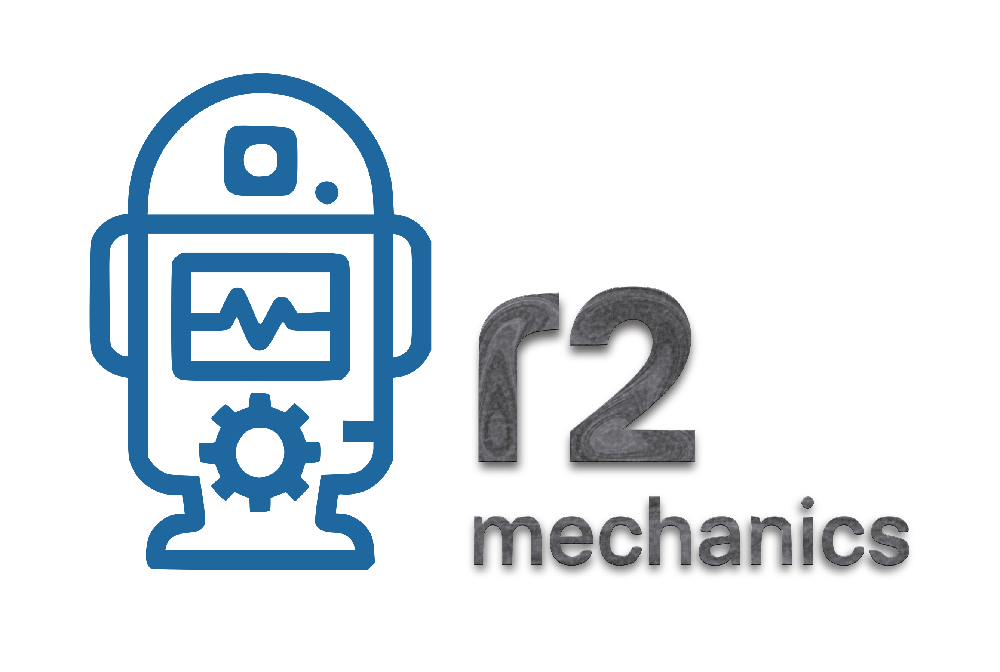

Offline-first archival transcription & evidence mapping
R2 Mechanics turns difficult, long-form and multilingual audio and video into structured, source-linked, navigable and reviewable records.
This is the documentation repository. The current live demonstrations are hosted on the website.